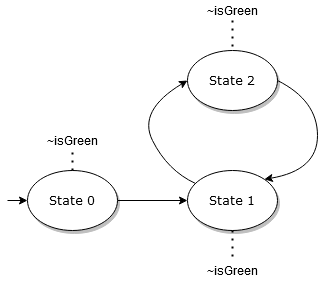
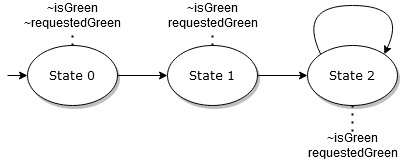
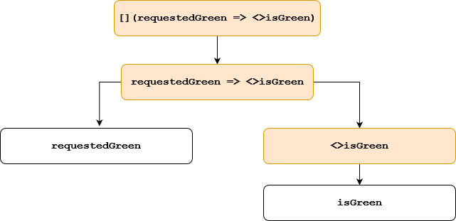

Temporal properties and counterexamples
Difficulty: Red trail – Medium
Author: Philip Offtermatt, 2022
In this tutorial, we will show how Apalache can be used to decide temporal
properties that are more general than invariants.
This tutorial will be most useful to you if you have a basic understanding of
linear temporal logic, e.g. the semantics of <> and [] operators.
See a writeup of temporal operators here.
Further, we assume you are familiar with TLA+, but expert knowledge is not necessary.
As a running example, the tutorial uses a simple example specification, modelling a devious nondeterministic traffic light.
Specifying temporal properties
The traffic light has two main components: A lamp which can be either red or green, and a button which can be pushed to request the traffic light to become green. Consequently, there are two variables: the current state of the light (either green or red), and whether the button has been pushed that requests the traffic light to switch from red to green.
The full specification of the traffic light is here:
TrafficLight.tla.
But don’t worry - we will dissect the spec in the following.
In the TLA specification, we declare two variables:
VARIABLES
\* If true, the traffic light is green. If false, it is red.
\* @type: Bool;
isGreen,
\* If true, the button has been pushed to request the light to become green, but the light has
\* not become green since then.
\* If false, the light has become green since the button has last been pushed
\* or the button has never been pushed.
\* @type: Bool;
requestedGreen
Initially, the light is red and green has not yet been requested:
\* The light is initially red, and the button was not pressed.
Init ==
/\ isGreen = FALSE
/\ requestedGreen = FALSE
We have three possible actions:
- The traffic light can switch from red to green,
- The traffic light can switch from green to red, or
- The button can be pushed, thus requesting that the traffic light becomes green.
(* ---------------------- *)
(* requesting green light *)
\* The switch to green can only be requested when the light is not green, and
\* the switch has not *already* been requested since the light last turned green.
RequestGreen_Guard ==
/\ ~isGreen
/\ ~requestedGreen
RequestGreen_Effect ==
/\ requestedGreen' = TRUE
/\ UNCHANGED << isGreen >>
RequestGreen ==
RequestGreen_Guard /\ RequestGreen_Effect
(* ---------------------- *)
(* switching to red light *)
\* The light can switch to red at any time if it is currently green.
SwitchToRed_Guard == isGreen
SwitchToRed_Effect ==
/\ isGreen' = FALSE
/\ UNCHANGED << requestedGreen >>
SwitchToRed ==
SwitchToRed_Guard /\ SwitchToRed_Effect
(* ------------------------ *)
(* switching to green light *)
\* The light can switch to green if it is currently red, and
\* the button to request the switch to green has been pressed.
SwitchToGreen_Guard ==
/\ ~isGreen
/\ requestedGreen
SwitchToGreen_Effect ==
/\ isGreen' = TRUE
/\ requestedGreen' = FALSE
SwitchToGreen ==
SwitchToGreen_Guard /\ SwitchToGreen_Effect
Next ==
\/ RequestGreen
\/ SwitchToRed
\/ SwitchToGreen
In the interest of simplicity, we’ll assume that the button cannot be pushed when green is already requested, and that similarly it’s not possible to push the button when the light is already green.
Now, we are ready to specify the properties that we are interested in. For example, when green is requested, at some point afterwards the light should actually turn green. We can write the property like this:
RequestWillBeFulfilled ==
[](requestedGreen => <>isGreen)
Intuitively, the property says:
“Check that at all points in time ([]),
if right now, RequestGreen is true,
then at some future point in time, IsGreen is true.”
Let’s run Apalache to check this property:
apalache-mc check --temporal=RequestWillBeFulfilled TrafficLight.tla
...
The outcome is: NoError
Checker reports no error up to computation length 10
It took me 0 days 0 hours 0 min 2 sec
Total time: 2.276 sec
EXITCODE: OK
This is because our traffic watch is actually
deterministic:
If it is red and green has not been requested,
the only enabled action is RequestGreen.
If it is red and green has been requested,
only SwitchToGreen is enabled.
And finally, if the light is green,
only SwitchToRed is enabled.
However, we want to make our traffic light more devious. We will allow the model to stutter, that is, just let time pass and take no action.
We can write a new next predicate that explicitly allows stuttering like this:
\* @type: <<Bool, Bool>>;
vars == << isGreen, requestedGreen >>
StutteringNext ==
[Next]_vars
Recall that [Next]_vars is shorthand for Next \/ UNCHANGED vars.
Now, let us try to verify the property once again, using the modified next predicate:
apalache-mc check --next=StutteringNext \
--temporal=RequestWillBeFulfilled TrafficLight.tla
Step 2: picking a transition out of 3 transition(s) I@18:04:16.132
State 3: Checking 1 state invariants I@18:04:16.150
State 3: Checking 1 state invariants I@18:04:16.164
State 3: Checking 1 state invariants I@18:04:16.175
State 3: Checking 1 state invariants I@18:04:16.186
Check an example state in: /home/user/apalache/docs/src/tutorials/_apalache-out/TrafficLight.tla/2022-05-30T18-04-13_3349613574715319837/counterexample1.tla, /home/user/apalache/docs/src/tutorials/_apalache-out/TrafficLight.tla/2022-05-30T18-04-13_3349613574715319837/MC1.out, /home/user/apalache/docs/src/tutorials/_apalache-out/TrafficLight.tla/2022-05-30T18-04-13_3349613574715319837/counterexample1.json, /home/user/apalache/docs/src/tutorials/_apalache-out/TrafficLight.tla/2022-05-30T18-04-13_3349613574715319837/counterexample1.itf.json E@18:04:16.346
State 3: state invariant 0 violated. E@18:04:16.346
Found 1 error(s) I@18:04:16.347
The outcome is: Error I@18:04:16.353
Checker has found an error I@18:04:16.354
It took me 0 days 0 hours 0 min 2 sec I@18:04:16.354
Total time: 2.542 sec I@18:04:16.354
This time, we get a counterexample.
Let’s take a look at /home/user/apalache/docs/src/tutorials/_apalache-out/TrafficLight.tla/2022-05-30T18-04-13_3349613574715319837/counterexample1.tla.
Let’s first focus on the initial state.
(* Initial state *)
(* State0 ==
RequestWillBeFulfilled_init = FALSE
/\ __loop_InLoop = FALSE
/\ __loop_☐(requestedGreen ⇒ ♢isGreen) = FALSE
/\ __loop_requestedGreen ⇒ ♢isGreen = TRUE
/\ __loop_♢isGreen = FALSE
/\ __loop_isGreen = FALSE
/\ __loop_requestedGreen = FALSE
/\ ☐(requestedGreen ⇒ ♢isGreen) = FALSE
/\ ☐(requestedGreen ⇒ ♢isGreen)_unroll = TRUE
/\ requestedGreen ⇒ ♢isGreen = TRUE
/\ ♢isGreen = FALSE
/\ ♢isGreen_unroll = FALSE
/\ isGreen = FALSE
/\ requestedGreen = FALSE *)
State0 ==
RequestWillBeFulfilled_init = FALSE
/\ __loop_InLoop = FALSE
/\ __loop___temporal_t_1 = FALSE
/\ __loop___temporal_t_2 = TRUE
/\ __loop___temporal_t_3 = FALSE
/\ __loop_isGreen = FALSE
/\ __loop_requestedGreen = FALSE
/\ __temporal_t_1 = FALSE
/\ __temporal_t_1_unroll = TRUE
/\ __temporal_t_2 = TRUE
/\ __temporal_t_3 = FALSE
/\ __temporal_t_3_unroll = FALSE
/\ isGreen = FALSE
/\ requestedGreen = FALSE
Two things are notable:
- The initial state formula appears twice, once as a comment and once in TLA+.
- There are way more variables than the two variables we specified.
The comment and the TLA+ specification express the same state, but in the comment,
some variable names from the encoding have been replaced with more human-readable names.
For example, there is a variable called ☐(requestedGreen ⇒ ♢isGreen) in the comment,
which is called __temporal_t_1 in TLA+.
In the following, let’s focus on the content of the comment, since it’s easier to understand what’s going on.
There are many additional variables in the counterexample, because to check temporal formulas, Apalache uses an encoding that transforms temporal properties to invariants. If you are interested in the technical details, the encoding is described in sections 3.2 and 4 of Biere et al.. However, to understand the counterexample, you don’t need to go into the technical details of the encoding. We’ll go explain the counterexample in the following.
We will talk about traces in the following. You can find more information about (symbolic) traces here. For the purpose of this tutorial, however, it will be enough to think of a trace as a sequence of states that were encountered by Apalache, and that demonstrate a violation of the property that is checked.
Counterexamples encode lassos
First, it’s important to know that for finite-state systems, counterexamples to temporal properties are traces ending in a loop, which we’ll call lassos in the following. If you want to learn more about why this is the case, have a look at the book on model checking.
A loop is a partial trace that starts and ends with the same state. A lasso is made up of two parts: A prefix, followed by a loop. It describes a possible infinite execution: first it goes through the prefix, and then repeats the loop forever.
For example, what is a trace that is a counterexample to the property ♢isGreen?
It’s an execution that loops without ever finding a state that satisfies isGreen.
For example, a counterexample trace might visually look like this:

In contrast, as long as the model checking engine has not found a lasso, there may still exist some future state satisfying isGreen.
Utilizing auxiliary variables to find lassos
The encoding for temporal properties involves lots of auxiliary variables. While some can be very helpful to understand counterexamples, many are mostly noise.
Let’s first understand how Apalache can identify lassos using auxiliary variables.
The auxiliary variable __loop_InLoop is true in exactly the states belonging to the loop.
Additionally, at the first state of the loop, i.e., when __loop_InLoop switches from false to true,
we store the valuation of each variable in a shadow copy whose name is prefixed by __loop_.
Before the first state of the loop, the __loop_ carry arbitrary values.
In our example, it looks like this:
(* State0 ==
...
/\ __loop_InLoop = FALSE
...
/\ __loop_isGreen = FALSE
/\ __loop_requestedGreen = FALSE
...
/\ isGreen = FALSE
/\ requestedGreen = FALSE *)
(* State1 ==
...
/\ __loop_InLoop = FALSE
...
/\ __loop_isGreen = FALSE
/\ __loop_requestedGreen = FALSE
...
/\ isGreen = FALSE
/\ requestedGreen = TRUE *)
(* State2 ==
...
/\ __loop_InLoop = FALSE
...
/\ __loop_isGreen = FALSE
/\ __loop_requestedGreen = FALSE
...
/\ isGreen = FALSE
/\ requestedGreen = TRUE *)
(* State3 ==
...
/\ __loop_InLoop = TRUE
...
/\ __loop_isGreen = FALSE
/\ __loop_requestedGreen = TRUE
...
/\ isGreen = FALSE
/\ requestedGreen = TRUE *)
So, initially, isGreen and requestedGreen are both false.
Further, __loop_InLoop is false, and the copies of isGreen and requestedGreen, which are called
__loop_isGreen and __loop_requestedGreen, are equal to the values of isGreen and requestedGreen.
From state 0 to state 1, requestedGreen changes from false to true.
From state 1 to state 2, the system stutters, and the valuation of model variables remains unchanged.
Finally, in state 3 __loop_InLoop is set to true, which means that
the loop starts in state 2, and the trace from state 3 onward is inside the loop.
However, since state 3 is the last state, this means simply that the trace loops in state 2.
Since the loop starts, the copies of the system variables are also set to the values of the variables in state 2,
so __loop_isGreen = FALSE and __loop_requestedGreen = TRUE.
The lasso in this case can be visualized like this:

It is also clear why this trace violates the property:
requestedGreen holds in state 1, but isGreen never holds,
so in state 1 the property requestedGreen => <>isGreen is violated.
Auxiliary variables encode evaluations of subformulas along the trace
Next, let us discuss the other auxiliary variables that are introduced by Apalache to check the temporal property. These extra variables correspond to parts of the temporal property we want to check. These are the following variables with their valuations in the initial state:
(* State0 ==
RequestWillBeFulfilled_init = FALSE
...
/\ ☐(requestedGreen ⇒ ♢isGreen) = FALSE
/\ ☐(requestedGreen ⇒ ♢isGreen)_unroll = TRUE
/\ requestedGreen ⇒ ♢isGreen = TRUE
/\ ♢isGreen = FALSE
/\ ♢isGreen_unroll = FALSE
...
There are three groups of variables:
- Variables that look like formulas, e.g.
☐(requestedGreen ⇒ ♢isGreen) - Variables that look like formulas and end with
_unroll, e.g.☐(requestedGreen ⇒ ♢isGreen)_unroll - The variable
RequestWillBeFulfilled_init.
Let’s focus on the non-_unroll variables that look like formulas
first.
Recall that the temporal property we want to check is [](requestedGreen => <>isGreen).
That’s also the name of one of the variables: The value of the variable
☐(requestedGreen ⇒ ♢isGreen) tells us whether starting in the current state, the
formula [](requestedGreen => <>isGreen) holds. Since we are looking at a counterexample to this formula, it is not
surprising that the formula does not hold in the initial state of the counterexample.
Similarly, the variable requestedGreen ⇒ ♢isGreen tells us whether
the property requestedGreen ⇒ ♢isGreen holds at the current state.
It might be surprising to see that the property holds
but recall that in state 0, requestedGreen = FALSE, so the implication is satisfied.
Finally, we have the variable ♢isGreen, which is false, telling
us that along the execution, isGreen will never be true.
You might already have noticed the pattern of which formulas appear as variables.
Take our property [](requestedGreen => <>isGreen).
The syntax tree of this formula looks like this:

For each node of the syntax tree where the formula contains a temporal operator,
there is an auxiliary variable.
For example, there would be auxiliary variables for the formulas []isGreen
and (<>isGreen) /\ ([]requestedGreen), but not for the formula isGreen /\ requestedGreen.
As mentioned before, the value of an auxiliary variable in a state tells us whether from that state, the corresponding subformula is true. In this particular example, the formulas that correspond to variables in the encoding are filled with orange in the syntax tree.
What about the _unroll variables? There is one _unroll variable for each immediate application of a temporal operator in the formula.
For example, ☐(requestedGreen ⇒ ♢isGreen)_unroll is the unroll-variable for the
leading box operator.
To illustrate why these are necessary, consider the formula
[]isGreen. To decide whether this formula holds in the last state of the loop, the algorithm needs to know whether
isGreen holds in all states of the loop. So it needs to store this information when it traverses the loop.
That’s why there is an extra variable, which stores whether isGreen holds on all states of the loop,
and Apalache can access this information when it explores the last state of the loop.
Similarly, the unroll-variable ♢isGreen_unroll holds true
if there is a state on the loop such that isGreen is true.
Let us take a look at the valuations of ☐(requestedGreen ⇒ ♢isGreen)_unroll along our counterexample to see this.
(* State0 ==
...
/\ __loop_InLoop = FALSE
...
/\ ☐(requestedGreen ⇒ ♢isGreen) = FALSE
/\ ☐(requestedGreen ⇒ ♢isGreen)_unroll = TRUE
...
(* State1 ==
...
/\ __loop_InLoop = FALSE
...
/\ ☐(requestedGreen ⇒ ♢isGreen) = FALSE
/\ ☐(requestedGreen ⇒ ♢isGreen)_unroll = TRUE
...
(* State2 ==
...
/\ __loop_InLoop = FALSE
...
/\ ☐(requestedGreen ⇒ ♢isGreen) = FALSE
/\ ☐(requestedGreen ⇒ ♢isGreen)_unroll = TRUE
...
(* State3 ==
...
/\ __loop_InLoop = TRUE
...
/\ ☐(requestedGreen ⇒ ♢isGreen) = FALSE
/\ ☐(requestedGreen ⇒ ♢isGreen)_unroll = FALSE
...
So in the last state, ☐(requestedGreen ⇒ ♢isGreen)_unroll
is not true, since ☐(requestedGreen ⇒ ♢isGreen)
does not hold in state 2, which is on the loop.
Similar to the __loop_ copies for model variables,
we also introduce copies for all (temporal) subformulas,
e.g., __loop_☐(requestedGreen ⇒ ♢isGreen) for ☐(requestedGreen ⇒ ♢isGreen).
These fulfill the same function as the __loop_ copies for the
original variables of the model, i.e., retaining the state of variables from the first state of the loop, e.g.,
(* State0 ==
...
/\ __loop_☐(requestedGreen ⇒ ♢isGreen) = FALSE
/\ __loop_requestedGreen ⇒ ♢isGreen = TRUE
/\ __loop_♢isGreen = FALSE
/\ __loop_isGreen = FALSE
/\ __loop_requestedGreen = FALSE
Finally, let’s discuss RequestWillBeFulfilled_init.
This variable is an artifact of the translation for temporal properties.
Intuitively, in any state, the variable will be true if the variable encoding the formula RequestWillBeFulfilled
is true in the first state.
A trace is a counterexample if RequestWillBeFulfilled is false in the first state,
so RequestWillBeFulfilled_init is false, and a loop satisfying requirements on the auxiliary variables is found.
Further reading
In this tutorial, we learned how to specify temporal properties in Apalache, and how to read counterexamples for such properties.
If you want to dive deeper into the encoding, it is formally explained in sections 3.2 and 4 of Biere et al.. To understand why this encoding was chosen, you can read the ADR on temporal properties. Finally, if you want to go into the nitty-gritty details and see the encoding in action, you can look at the intermediate TLA specifying the encoding.
Run
apalache-mc check --next=StutteringNext \
--write-intermediate=yes --temporal=RequestWillBeFulfilled TrafficLight.tla
You will get intermediate output in a folder named like
_apalache_out/TrafficLight/TIMESTAMP/intermediate/.
There, take a look at 0X_OutTemporalPass.tla.